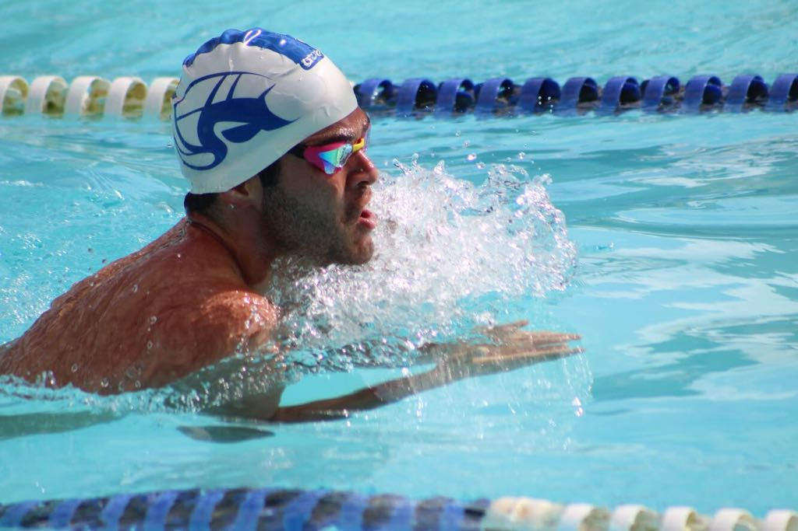

Un poco acerca de mi
Nombre: Martin Antonio Vivanco Palacios
Matricula: A01701167
Mail alternativo: mavp98@hotmail.com
Carrera: ISC
Aficiones
Natación
La natación es una de mis actividades favoritas, creo que es un excelente deporte, ya que, aunque las competencias sean personales las relaciones de amistad y compañerismo que se logran en el equipo son inigualables debido al gran tiempo que pasamos juntos en el equipo, nos conocemos en nuestros mejores momentos, tanto en los peores, y siempre estamos ahí para apoyarnos. Encuentro esta actividad tanto relajante como apasionante. Relajante porque me ayuda a dejar de pensar en los problemas que pueda tener y a liberar el estrés. La encuentro apasionante ya que siempre se puede mejorar y los únicos limites que existen son los que tú te pongas, Mark Spitz (campeón olímpico) decía que en el entrenamiento un 80% era la parte física mientras que la parte mental era exclusivamente 20%, mientras que en la competencia era exactamente lo opuesto, un 80% mental y solo un 20% físico, claro que esto no significa que no hay que entrenar, como yo lo veo, en el entrenamiento preparas tu cuerpo para lograr las metas, y tal vez tu cuerpo está preparado para lograr tu objetivo, pero tu mente puede no estarlo, por más intenso que haya sido tu entrenamiento no vas a lograr tus metas, porque lo más importante no solo en la natación, sino en todo lo que hagas en la vida es creer en ti.
Preguntas
¿Cuáles son las diferencias entre los posibles valores de la propiedad position?Static: sigue normalmente el flujo de la página, es la propiedad por default.
Relative: puedes mover su posición relativa a otros elementos con left, rigth, etc.
Fixed: se posiciona en un espacio relativo en la página, y no se mueve ni deja espacios en blanco, las otras imágenes o párrafos se enciman o son cubiertos por él depende de su z-index.
Absolute: se posiciona en el elemento que esta antes de el con las características de fixed.
Sticky: es un elemento estático pero al llegar a la parte de arriba de la página se vuelve fixed.
position info
¿Cuáles son los valores estándar para la propiedad visibility?
Visibility tiene como default visible.
Visible: es cuando podemos ver el elemento y este ocupa espacio.
Hidden: no podemos ver el elemento, pero ocupa espacio.
Collapse: no vemos el elemento ni ocupa espacio.
¿Qué es el zIndex y para qué sirve? Z index sirve para determinar qué tan atrás en la página se encuentra un elemento. Por ejemplo, una marca de agua deberá llevar un z index negativo para que esté detrás de todo

Ciclo de vida de sistemas de informacion
Todos los sistemas de información tienen un ciclo de vida. Este es el que da un orden a lo que se tiene que hacer mientras se desarrolle. Primero que nada este debe planearse junto con el cliente para saber que se debe hacer; el segundo paso es el análisis, donde el desarrollador analiza que es lo que quiere el cliente y le muestra una propuesta, si todo sale bien podemos seguir al siguiente paso, mientras que si algo sale mal en cualquier parte del ciclo siempre debemos retroceder; Lo siguiente seria el diseño, en donde el desarrollador plasma sus ideas sobre el programa que platico y analizo con el cliente y le muestra un bosquejo, si el cliente está de acuerdo seguimos; Continuamos con la implementación, donde empezamos a codificar el programa; Una vez que está listo se hacen las pruebas necesarias y finalmente después de entregarse el producto hay un periodo de mantenimiento.